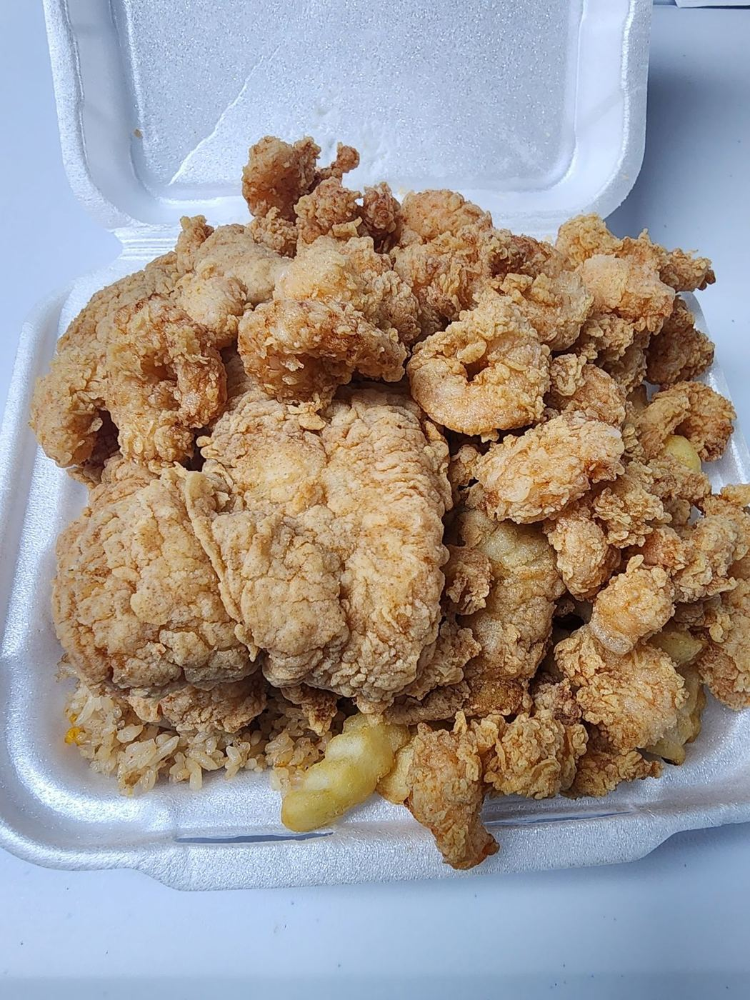
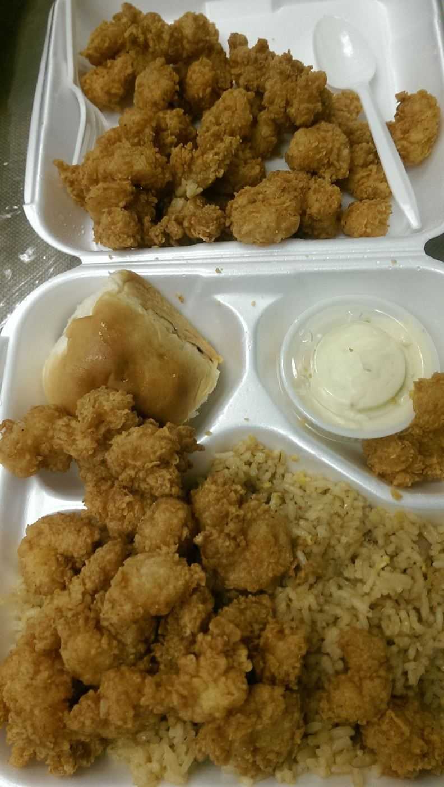
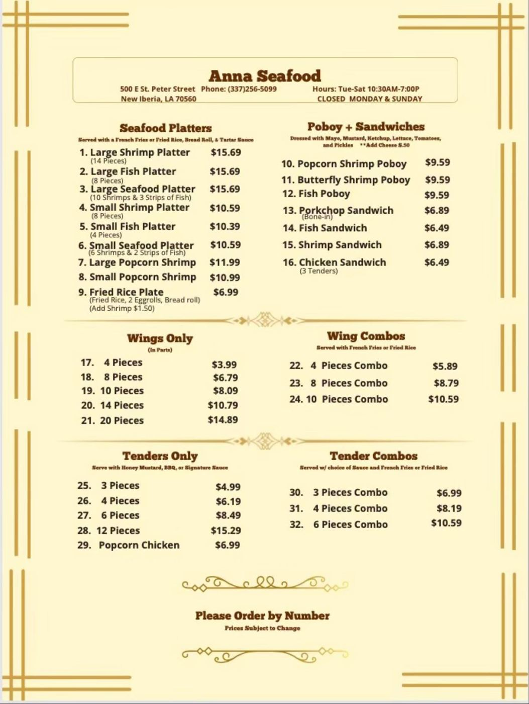

TAKEOUT
ONLY
ONLY
Anna Seafood
Fried seafood platters & Vietnamese egg rolls · New Iberia, LA · 4.7★ (228 reviews)
Call your orderSmall or large?

“Order the small, it’s still big.” (Google review)
Very good food just needed more seating but the food was amazingThis ARGUEABLY has to be the best local owned family friendly fast food restaurant in town! You can feel the…Everything from the service to the food is 5🌟. I can guarantee you won't leave hungry. Pictured is the small…First thing I have to say is even if the food wasn't good. I'd come back because of the excellent customer…You can't go wrong here. The batter can only be judge by taste buds. Order the small, it's still big. Order…I love It. They give you a lot of food for your money.The food is so good. The place is small and you can only get take out. The staff is very friendly and quick…Very good food just needed more seating but the food was amazingThis ARGUEABLY has to be the best local owned family friendly fast food restaurant in town! You can feel the…Everything from the service to the food is 5🌟. I can guarantee you won't leave hungry. Pictured is the small…First thing I have to say is even if the food wasn't good. I'd come back because of the excellent customer…You can't go wrong here. The batter can only be judge by taste buds. Order the small, it's still big. Order…I love It. They give you a lot of food for your money.The food is so good. The place is small and you can only get take out. The staff is very friendly and quick…
Read the menu

Move your finger or cursor over the menu to zoom in. Photo of the menu from the Google listing; call to confirm current prices.